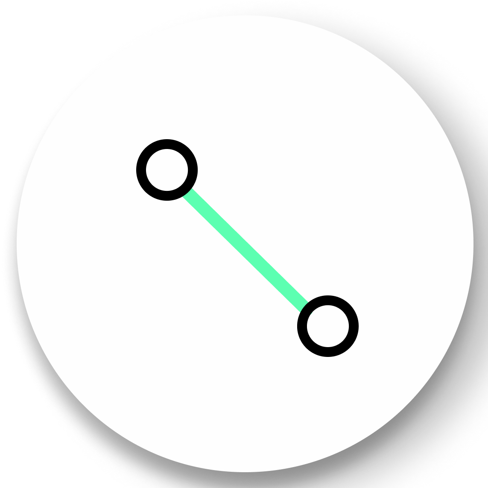

Sidebar
Appearance
Point Budget Slider
This is the same function as the point budget slider in the Web interface. See: Point Budget Slider
Field of View
To control viewable range that what is included within the scene, the field of view can be adjusted. Default value is set to 55 degrees. The field of view will determine how much of the pointcloud you can see in your screen.
Eye Dome-lighting
The Potree Point Cloud 3d viewer module can implement eye dome-lighting, a lighting model that highlights the shapes of objects.
Eye Dome-lighting group objects, shade their outlines and enhances depth perception in scientific visualization images.
It is useful for recognition and measurement of structures within pointcloud. It can be modified by adjusting Radius, Strength, and Opacity.Those are set to give you tight controls of movement with in the model.
By default, Eye Dome-Lighting is enabled on Potree 3D viewer, but it can be disabled by clicking on the enable option.
Background
Potree 3D viewed background can be modified with following available options:
Street Map(Now this section is null)
Skybox
Gradient
Black and white
Splat Quality
Splat quality can be adjusted to standard or high quality, to improve the appearance of pointcloud.
Standard/High quality are using different splat method which will give you the different viewing experience on your computer. Choose the one that looks better for you.
Min node size - impacts the point density of the nodes represented.
Box - Displays the boxes of the nodes.
Lock view - Lock the point cloud view, preventing to load or unload points to the model.
Tools
Measurement
Potree viewer provides several tools for measurement. This tool set consist of 12 elements. It also has controls for showing or hiding the resulting measurement labels.
Measurements are performed by use of left clicking the mouse on the desired position and right clicking is needed to terminate the process. Angle, Point,Distance,Height,Circle measurement tools also can be found in the web interface. To remove all measurements that have been made, click on the red cross or press “Escape”.
Angle

This is the same function as the angle measurement tool in the Web interface. See: Angle
Point

This is the same function as the point measurement tool in the Web interface. See: Point
Distance
{kind=link}
This is the same function as the distance measurement tool in the Web interface. See: Distance
Height

This is the same function as the height measurement tool in the Web interface. See: Height
Circle

This is the same function as the circle measurement tool in the Web interface. See: Circle
Azimuth
This tool measures the azimuthal angle of a line. This line is formed by two points selected by the user, the angle is measured in degrees, clockwise from 0 to 360 and starting from the geographical north. To start a measurement, click on the azimuth icon and then click the first position for the center point, then click the second position to complete the measurement.
More information can also be obtained from selecting this element under the scene section.
Area
This tool measures the horizontal area formed by a polygon. To start a measurement, click on the area icon and start clicking on the positions forming the desired polygon (three or more). Right click to finish measurement.
Further information can also be obtained from selecting this element under the scene section.
Volume (cube)
This tool measures the horizontal area formed by a cube. To start a meaurement, click on the volume(cube) icon and click on the desired position in pointcloud to place the cube. It is possible to relocate, rescale and rotate the cube using the displayed handlers. click the eye icons on the cube can view cube from the angle normal to the plane. Right click to finish the measurement. More information can also be obtained from selecting this element under the scene section.
Volume (sphere)
This tool measures the volume formed by a sphere. To start a measurement, click on the volume (sphere) icon and click on the model to place the sphere. It is possible to relocate, rescale and rotate the sphere using the displayed handlers. Right click to finish measurement. Further information can also be obtained from selecting this element under the scene section.
Height profile
The tool icon looks like a multicolored M. This tool creates a height profile formed by a line on the model. To start a measurement, click on the Height profile icon and then form a line on the pointcloud by clicking on the desired points (two or more).
When you mouse over the point cloud data, you should now see a red ball attached to your mouse cursor. This allows you to drop nodes and establish the location of your profile. When you want to finalize your profile double click on the last node. Once a profile is finalized, you can still change its location by clicking on the red nodes and dragging them to a different location.
Further information and options, such as Show 2d Profile, can also been obtained from selecting this element under the scene section.
A profile of the lidar data should now be visible at the bottom of the screen. The profile will also update in real time if you move the profile throughout the data.
The save button in the upper right corner of the profile window will download a las file(3D) containing the points from the profile or a CSV file(2D) containing the metadata of points. This is useful for extracting the data you want to use for further analysis.
Annotation
This tool creates an annotation label on a highlighted point on the pointcloud. To label a new annotation, click on the annotation icon and then click on the desired position. To edit the annotation, select this element under the scene section, then edit Title and Description. Click the annotation can zoom to the annotation.
Remove measurements
This tool removes all measurements on the pointcloud. To remove all measurement, click on the Remove all measurements icon or press “Escape” on the keyboard.
Clipping
Point cloud can be clipped by selecting an area. Clipping options include None / Highlight / Inside /outside.
To clip a point cloud, click on the volume clip icon, place the cube on the model and relocate, rescale, and rotate to contain the desired area. Highlight is set by default as the clipping method.
If only the points contained within the cube needs to be displayed, click on “Inside”, otherwise click on “Outside”.
To remove the clipping volume or polygons click on the Remove all clipping volumes icon.
Navigation
Potree viewer have 4 Navigation controls which define its behavior.
Earth Control

This is the same navigation mode as the earthcontrol in the Web interface. See: Earth Control
Fly control
This is the same navigation mode as the flycontrol in the Web interface. See: Fly control
Helicopter control
{kind=link}
Helicopter control moves the camera as in an aircraft using the keyboard. Keys “W” and “S” moves forward and backwards, respectively restricted in a horizontal plane, while “A” and “D” moves left and right respectively.
Also, the “R” and “F” keys moves the camera up and down. The mouse left button changes the direction of the camera, mouse wheel controls the speed for these movements, and right button moves the model in the XY axis.
Orbit Control
{kind=link}
Orbit Control is similar to earthcontrol. The mouse left button orbits the model, the wheel controls zoom, and the right button moves the model in the XYZ axis.
Full extent
Full extent button restores all pointcloud view.
Navigation cube
Navigation cube displays a wireframe cube from different direction. Click the icon to view pointcloud from the specific direction.
Compass
Compass button displays/hides a compass on the upper right corner.
Scene
The Scene section displays a file tree containing all the scene elements. Elements are arranged in six groups, which are Point clouds / Measurements / Annotations / Other / Vector / Images.
Each element within these groups have subtrees that can be selected to get more information and control its properties.
{kind=link}